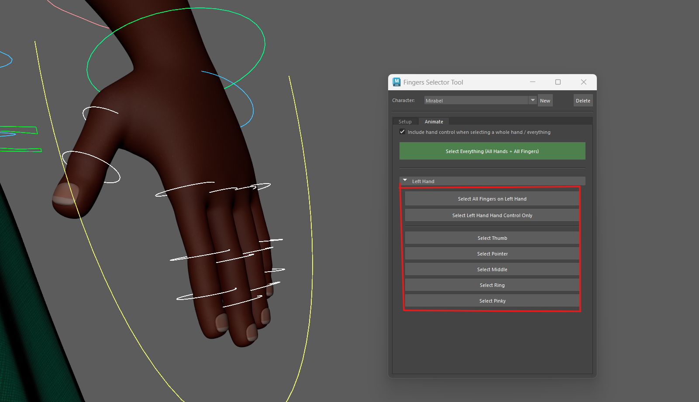
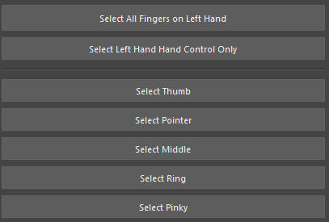

Fingers Selector Tool
A Maya tool for quickly selecting fingers controls for keyframe animation.
Quick Finger Selection: Select Multiple Controls in One Click
Built a custom Maya tool that allows animators to quickly select predefined finger control groups from a simple interface.
Instead of manually selecting each control in the viewport, the tool streamlines the process into a single click, helping reduce repetitive actions during keyframe animation.

Flexible Selection Options: Individual or Combined Finger Controls
Implemented multiple selection modes that let animators choose individual fingers or entire finger groups depending on the task.
This makes it easy to switch between detailed posing and broader hand adjustments without interrupting the animation workflow.

Animator-Friendly Interface: Simple, Fast, and Easy to Use
Designed a lightweight user interface that keeps the most commonly used selection controls within easy reach.
The layout prioritizes speed and clarity, allowing animators to spend less time navigating the rig and more time focusing on performance.
Workflow Optimization: Built to Reduce Repetitive Tasks
Created the tool to solve a common bottleneck in character animation where repeatedly selecting finger controls can become tedious.
By automating the selection process, the tool helps improve efficiency during blocking, polishing, and final animation passes.